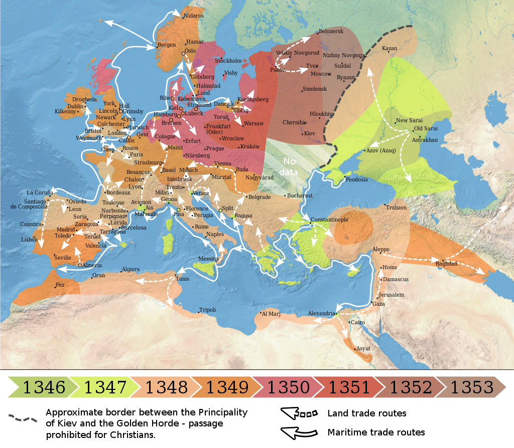

Dịch hạch
Cái chết đen hay Dịch hạch đen là đại dịch dịch hạch thứ hai trong lịch sử , đạt đỉnh điểm vào năm 1346–1353. Ở Âu-Á và Bắc Phi, 75–200 triệu người đã chết vì căn bệnh này. Theo nhiều báo cáo khác nhau, khoảng 30% - 60% dân số châu Âu đã bỏ mạng trong thời kỳ đó. Bệnh dịch hạch do vi khuẩn Yersinia Pestis gây ra, nhưng nó cũng có thể gây nhiễm trùng huyết hoặc bệnh dịch phổi. Bệnh dịch đã tạo ra những biến động về tôn giáo, xã hội và kinh tế, với những ảnh hưởng sâu sắc đến tiến trình lịch sử châu Âu.
